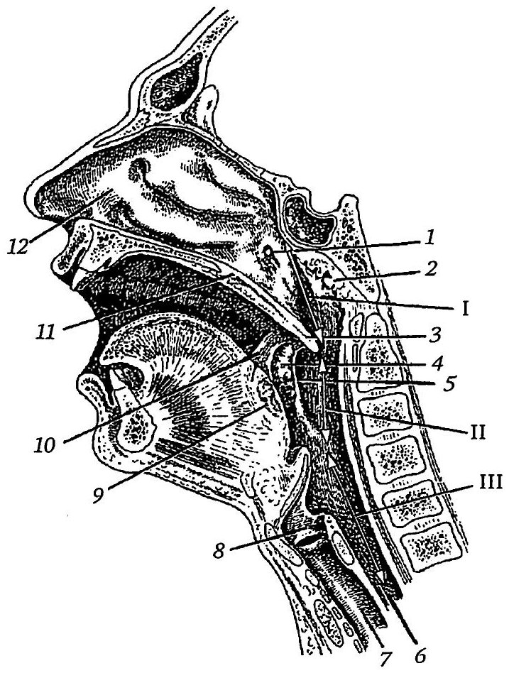

Анатомия и физиология глотки
Общие сведения и отделы глотки
Глотка (pharynx) — отдел пищеварительной трубки между полостью рта и пищеводом, одновременно входящий в состав верхних дыхательных путей. Именно здесь пищеварительный и дыхательный пути перекрещиваются. Она имеет вид воронкообразной трубки, сплюснутой в переднезаднем направлении, и фиксирована к основанию черепа. Лежит глотка кпереди от шейного отдела позвоночника, а на уровне VI–VII шейных позвонков переходит в пищевод. Длина её у взрослого составляет 12–14 см.
Выделяют три отдела. Верхний, носовой, называется носоглоткой (pars nasalis, epipharynx), средний, ротовой, — ротоглоткой (pars oralis, mesopharynx), нижний, гортанный, — гортаноглоткой (pars laryngea, hypopharynx). В глотке различают верхнюю, заднюю, две боковые и переднюю стенки. Передняя стенка практически отсутствует, так как верхние и средние отделы открываются в хоаны, зев и вход в гортань; она есть только в гортаноглотке, где её образуют черпаловидные и перстневидный хрящи, покрытые мышцами и слизистой оболочкой. Боковые стенки прилежат к сосудисто-нервным пучкам шеи.

Носоглотка
Носоглотка через хоаны сообщается с полостью носа и выполняет только дыхательную функцию. Верхняя стенка (свод) граничит с клиновидной частью затылочной кости, задняя — с I и II шейными позвонками. На заднем участке свода и в верхнем отделе задней стенки расположена глоточная миндалина (tonsilla pharyngealis, аденоиды). Это скопление лимфоидной ткани толщиной около 2 мм, покрытое тонкой соединительнотканной капсулой и эпителием слизистой оболочки. У детей она хорошо развита, у взрослых слабо выделяется на задней стенке. Инволюция начинается на 6–7-м году жизни и заканчивается к половой зрелости, хотя иногда орган сохраняется и у взрослых.
У новорождённых и детей первых лет жизни между носоглоткой и ротоглоткой нет заметного перехода: свод плавно изгибается и переходит в заднюю стенку. К 5 годам между ними образуется непрямой угол, а к зрелости стенки смыкаются почти под прямым углом. Эти возрастные особенности необходимо учитывать при аденотомии.
На боковой стенке находится глоточное отверстие слуховой трубы, соединяющее носоглотку с барабанной полостью. Сверху и сзади его окружает трубный валик, спереди ограничивает трубно-нёбная складка, сзади — трубно-глоточная складка, в которой лежит одноимённая мышца. В слизистой оболочке у устья трубы расположена трубная миндалина. У новорождённого её размеры составляют 8 мм в длину и 3 мм в ширину, наибольшего развития она достигает в 5–7 лет, затем постепенно атрофируется. Позади трубного валика находится углубление — глоточный карман, или ямка Розенмюллера, слизистая оболочка которого также содержит лимфоидную ткань.
Ротоглотка и нёбные миндалины
От носоглотки ротоглотка условно отделена плоскостью, продолжающей твёрдое нёбо. Спереди она через зев (fauces) сообщается с полостью рта. Зев ограничен сверху мягким нёбом, снизу корнем языка, с боков передними (нёбно-язычными) и задними (нёбно-глоточными) дужками. Основу мягкого нёба составляют мышцы, свободный конец образует язычок. При глотании и произнесении некоторых звуков нёбная занавеска прижимается к задней стенке и вместе с сокращением констрикторов, образующих валик Пассавана, разобщает носоглотку и ротоглотку. При парезах и параличах мягкого нёба жидкая пища затекает в полость носа и развивается открытая гнусавость.
Между дужками расположена треугольная миндаликовая ямка, в которой лежат нёбные миндалины (tonsillae palatinae). Каждая состоит из лимфоидных узелков диаметром 1–2 мм, окружённых фиброзной капсулой. Медиальная поверхность, покрытая эпителием, обращена в полость рта и несёт 10–20 крипт, углубляющихся в ткань на 5–7 мм. Благодаря им свободная поверхность миндалины достигает 300 см². Структурной и функциональной единицей считают криптолимфон: крипту с окружающими её узелками и тонкой капсулой. При глотании миндалины слегка сдавливаются и сближаются, и крипты освобождаются от содержимого.

Паратонзиллярная клетчатка, надминдаликовая ямка и соседние сосуды
Латеральной поверхностью миндалина прилежит к боковой стенке глотки, отделяясь от неё фиброзной капсулой толщиной до 1 мм. Снаружи от капсулы лежит слой рыхлой паратонзиллярной клетчатки. Она спускается до корня языка, спереди сообщается с клетчаткой нёбно-язычной дужки, а вверху — с подслизистой основой мягкого нёба. При тонзиллэктомии миндалину следует отделять от стенки глотки вместе с капсулой.
Внутренняя сонная артерия проходит на 1–1,5 см кзади от миндалины. От верхнего полюса до неё около 28 мм, от нижнего 11–17 мм; до наружной сонной артерии соответственно 41 мм и 23–39 мм.
В верхней части пространства между дужками находится надминдаликовая ямка — гладкое треугольное вдавление в мягком нёбе, занятое добавочной долькой миндалины. Иногда эта долька глубоко уходит в мягкое нёбо, ветвится и не связана с основной миндалиной; тогда её называют добавочной внутринёбной миндалиной. Обычно она содержит глубокую ветвистую крипту — синус Туртюаля, играющий немаловажную роль в патологии миндалин.
Гортаноглотка и лимфоидное глоточное кольцо
Гортаноглотка начинается на уровне верхнего края надгортанника и идёт до нижнего края перстневидного хряща, где переходит в пищевод. Это самый узкий отдел глотки. Вход в гортань ограничен спереди надгортанником, с боков — черпалонадгортанными складками. По сторонам от гортани находятся глубокие грушевидные карманы. Складка верхнего гортанного нерва, в толще которой проходит одноимённый нерв, делит каждый карман на меньшую верхнюю и большую нижнюю части. У входа в гортань и в слизистой оболочке карманов лежат отдельные лимфоидные узелки.
В слизистой оболочке корня языка находится язычная миндалина, нечётко очерченная структура из 30–100 лимфоидных узелков под фиброзной капсулой. У детей она занимает весь корень языка и достигает толщины до 3 мм, у взрослых — лишь небольшой его участок, поскольку большая часть узелков редуцируется. Крипты язычной миндалины неглубокие, а в дно многих открываются протоки слюнных желёз, секрет которых очищает их.
Все скопления лимфоидной ткани глотки вместе образуют лимфоэпителиальное глоточное кольцо (кольцо Вальдейера — Пирогова1). В него входят парные нёбные и трубные и непарные глоточная и язычная миндалины. Кольцо слабо развито до рождения и в первые месяцы жизни, наибольшего развития достигает в детском возрасте, а у взрослых подвергается неравномерному обратному развитию.
Стенка глотки и окологлоточные пространства
Стенка глотки состоит из слизистой, мышечной и адвентициальной оболочек. Подслизистая основа хорошо выражена только в гортаноглотке и слабее в ротоглотке; в носоглотке её заменяет плотная фиброзная оболочка (глоточно-базилярная фасция), которой глотка крепится к основанию черепа. Поэтому в верхних отделах слизистая оболочка складок не образует. Носоглотка выстлана мерцательным эпителием, удаляющим мелкие пылевые частицы, ротоглотка и гортаноглотка — многослойным плоским, обеспечивающим скольжение пищевого комка.
Мышечная оболочка образована поперечнополосатыми мышцами двух групп. Три констриктора — верхний, средний и нижний — черепицеобразно прикрывают друг друга и сходятся сзади, образуя шов глотки. Поднимающие мышцы продольные, главная из них — шилоглоточная.
Снаружи адвентиция соединяется с окружающими структурами рыхлой клетчаткой, что допускает подвижность глотки. Кнаружи от неё лежит боковое глоточное (глоточно-челюстное) пространство. Передний его отдел, отделённый от заднего шилоглоточной мышцей, клинически важнее: в него распространяются воспалительные процессы из глотки. Здесь проходят блуждающий, языкоглоточный, добавочный и подъязычный нервы, внутренняя сонная артерия и внутренняя яремная вена. В пространство возможно распространение гноя из паратонзиллярной клетчатки при паратонзиллярном абсцессе или ранении стенки глотки. Оно сообщается с задним средостением, поэтому нагноение угрожает гнойным медиастинитом, расплавлением стенок крупных сосудов и смертельным кровотечением.
Между задней поверхностью глотки и предпозвоночной пластинкой собственной фасции шеи лежит заглоточное пространство с рыхлой клетчаткой и заглоточными лимфатическими узлами. Оно отделено от бокового пространства лишь тонкой перегородкой и тоже сообщается с задним средостением.
Кровоснабжение, иннервация и лимфоотток
Верхние и средние отделы глотки кровоснабжает восходящая глоточная артерия, ветвь наружной сонной. Миндалины лимфоэпителиального кольца, включая нёбную, получают кровь по миндаликовым ветвям лицевой артерии; одноимённые ветви могут отходить и от восходящей глоточной, восходящей и нисходящей нёбных и язычной артерий. Вены сопровождают артерии и впадают в глоточное и крыловидное сплетения, лицевую и язычную вены.
Лимфа от глотки и нёбных миндалин оттекает к заглоточным и глубоким шейным лимфатическим узлам по ходу внутренней яремной вены; для носоглотки регионарные узлы лежат на уровне верхней трети вены, для ротоглотки — средней, для гортаноглотки — нижней. Приносящих лимфатических сосудов миндалины не имеют, а отводящие идут к околоушным, заглоточным, язычным и поднижнечелюстным узлам.
Глотку иннервируют языкоглоточный и блуждающий нервы и симпатические гортанно-глоточные ветви, образующие глоточное сплетение. Шилоглоточную мышцу иннервирует языкоглоточный нерв, остальные мышцы — блуждающий. Чувствительную иннервацию верхнего отдела обеспечивает верхнечелюстной нерв, среднего — преимущественно языкоглоточный, нижнего — блуждающий. Чувствительные волокна к нёбной миндалине несёт языкоглоточный нерв.
Функции глотки и возрастные особенности
В акте глотания продольные мышцы поднимают глотку, натягивая её на пищевой комок, а констрикторы сокращаются последовательно сверху вниз и проталкивают комок к пищеводу. Мягкое нёбо приподнимается и закрывает носоглотку. Раздражение задней стенки вызывает глоточный рефлекс (рвоту, кашель).
Глотка участвует и в образовании голоса как резонатор. Носоглотка неподвижна, а ротоглотка и гортаноглотка меняют форму и объём при произнесении звуков. Аденоидные разрастания, отёк слизистой оболочки, полипы и опухоли уменьшают объём воздушного столба и вызывают закрытую гнусавость. Если носоглотка не отделяется от ротоглотки (паралич, прободение или укорочение нёбной занавески), возникает открытая гнусавость.
У новорождённого глотка воронкообразная, с высокой широкой верхней частью, длиной около 4 см. Её нижний край проецируется на уровень межпозвоночного диска между III и IV шейными позвонками; к 11–12 годам он опускается до V–VI, а в подростковом возрасте до VI–VII позвонка. Глоточное отверстие слуховой трубы у новорождённого лежит на уровне твёрдого нёба и имеет вид щели, просвет трубы постоянно открыт; после 2–4 лет отверстие смещается кверху и кзади.
Функциональные комплексы глотки
Принцип анатомо-функциональных систем организма, разработанный П. К. Анохиным2 (1948, 1955), позволяет рассматривать глоточно-пищеводную систему как единую функциональную организацию, состоящую из взаимодействующих комплексов, обеспечивающих ряд важных физиологических функций полости рта, глотки и смежных с ней органов. Авторы руководства разделили глоточно-пищеводную систему на следующие функциональные комплексы: жевательный, глотательный (пищепроводный), воздухопроводный, резонаторный, защитный, включающий в себя механическую и иммунобиологическую системы защиты, а также органы вкусовой чувствительности.
Жевательный комплекс включает, помимо жевательной системы челюстей, также и слюнные железы, железы слизистой оболочки полости рта и глотки, язык, небные миндалины и др. Глотательный комплекс включает глотку, пищевод и входящие в них системы. Резонаторный комплекс включает все отделы глотки, функционирующие совместно с пазушно-носовыми, ротовыми и гортанно-трахео-торакальным резонаторами. Защитный комплекс состоит из двух самостоятельных принципиально отличающихся друг от друга систем: механической, функционирующей совместно с глотательным комплексом, и иммунобиологической, представленной лимфоидным кольцом Пирогова — Вальдейера.
Функции перечисленных комплексов строго синхронизированы в направлении как соматических, так и вегетативных и иммунобиологических реакций. Выпадение любой из них приводит к рассогласованию их взаимодействия вплоть до возникновения функционального блока, при котором становятся затруднительными или даже невозможными функции глоточно-пищеводной системы.
Мелкие слюнные железы выделяют слюну постоянно, чем обеспечивают увлажнение слизистой оболочки полости рта и генерацию глотательного рефлекса, необходимого для открывания носоглоточного отверстия слуховой трубы и вентиляции среднего уха. Солитарные железы (околоушная, подчелюстная и подъязычная) начинают функционировать при попадании пищи в полость рта. У взрослого человека выделяется около 1,5 л слюны в сутки, практически полностью заглатываемой. по: Бабияк и соавт., т. 1, с. 439–441
Глотательный и механозащитный комплекс
Глотательный комплекс обеспечивает проталкивание пищевого комка в просвет пищевода для дальнейшего его продвижения в полость желудка. Пищевой комок ложится на спинку языка, затем сокращениями мышц его передней и средней трети прижимается к небу и проталкивается в сторону зева. Сокращение mm. mylohyoidei усиливает внутриротовое давление и способствует продвижению пищевого комка в сторону ротоглотки. Одновременно напряжение mm. hyoglossi придает корню языка движение кзади и книзу, смещая пищевой комок за мягкое небо в гортаноглотку.
Все двигательные акты, связанные с жеванием и продвижением пищевого комка за пределы ротовой полости, носят произвольный характер. Как только пищевой комок проходит уровень небных дужек и небной занавески и попадает в гортаноглотку, сокращение глотательных мышц становится непроизвольным и управляется глотательным рефлексом. Волевое подавление этого рефлекса практически невозможно. Поэтому инородное тело, случайно попавшее в пищевой комок или в проглатываемую жидкость, пройдя указанный уровень, в подавляющем большинстве случаев попадает в пищевод.
В глотательный процесс входят элементы механозащитной функции глотки. В ответ на раздражение слизистой оболочки полости рта движущимся пищевым комком или порцией жидкости возникает рефлекторное сокращение мышц мягкого неба и глотки. Мягкое небо, напрягаясь и отодвигаясь кзади и кверху, примыкает своим краем к задней стенке глотки. Одновременно возникает сокращение верхнего сжимателя, что приводит к сближению боковых и задней стенок глотки с мягким небом; они как бы охватывают его в полукольцо, чем достигается герметическая изоляция средней части глотки от носоглотки и предотвращение заброса в нее пищи. Изоляция носоглотки в процессе акта глотания — это первая фаза механической защитной функции глотки.
В момент продвижения пищевого комка в полость глотки возникает вторая фаза защитной функции, в процессе которой предотвращается попадание пищи в гортань. Благодаря сокращению мышц, начинающихся на подъязычной кости (mm. geniohyoidei, stylohyoidei, mylohyoidei и thyreohyoidei), а также переднего брюшка m. digastrici, происходит тяга подъязычной кости кверху с одновременной тракцией в этом же направлении гортани. При подъеме гортани вход в нее располагается выше пищевого комка, при этом надгортанник наподобие клапана закрывает вход в гортань (третья фаза защитного механизма), а мышцы, прикрепленные к черпаловидным хрящам, сближают их и смыкают голосовые складки, перекрывая вход в подскладочное пространство (четвертая фаза). В это время на период проникновения пищевого комка в пищевод акт дыхания прерывается.
Далее последовательным сокращением среднего, а затем нижнего сжимателей глотки пищевой комок или проглатываемая жидкость скользит в ретроларингеальную часть глотки. Соприкосновение пищевого комка с рецепторами глотки приводит к рефлекторному (непроизвольному) расслаблению мышц входа в пищевод, в результате чего под пищевым комком образуется зияющее отверстие, в которое пищевой комок проталкивается нижним сжимателем глотки. Обратное поступление пищевого комка из гортаноглотки в ротоглотку невозможно из-за продолжающегося прижатия языка к небу и задней стенке глотки. Рефлекторное раскрытие входа в пищевод совершается при каждом глотательном движении, и, напротив, насильственное проталкивание какого-либо предмета (зонда, трубки эзофагоскопа) без одновременно протекающей глотательной реакции сопровождается спазмированием входа в пищевод (пятая фаза защитной функции). Весь процесс акта глотания и чередования его с дыхательной функцией гортани В. И. Воячек образно назвал «механизмом железнодорожной стрелки».
Механизм проглатывания жидкости отличается от такового при проглатывании пищевого комка: сокращение мышц языка, дна полости рта (mm. mylohyoidei) и мягкого неба создает настолько высокое давление в глотке, что жидкость как бы впрыскивается в расслабляющийся пищевод и достигает кардии в течение 2–3 с почти без участия сжимателей глотки и мускулатуры пищевода. При этом функция «рецепторов бдительности», реагирующих на инородные тела, резко снижена, поэтому они чаще всего проникают в пищевод при употреблении жидких блюд. Пищевой комок достигает желудка в течение 6–8 с.
Автоматическая фаза глотательного рефлекса начинается при прохождении пищевым комком уровня зева и обусловлена афферентными импульсами, возникающими при раздражении нервных окончаний тройничного, языкоглоточного и верхнегортанного нервов. Эти импульсы приходят в глотательный центр, расположенный в продолговатом мозге. В этом центре происходит переключение на эффекторное звено рефлекторной дуги, включающей в себя двигательные волокна III ветви тройничного, блуждающего, подъязычного и добавочного нервов, иннервирующих соответствующие мышцы глотки, языка и пищевода. Координация глотательной и дыхательной функции осуществляется благодаря связям глотательного и дыхательного центров. Так, в момент глотания происходит торможение нейронов дыхательного центра с кратковременной остановкой дыхания. Возникновение в подкорковых и корковых центрах, затормаживающих дыхание, параллельных очагов возбуждения (смех, разговор, испуг и т. д.) способно нарушить координационное взаимодействие дыхательного и глотательного центров, что нередко приводит к поперхиванию и попаданию инородных тел в просвет гортани. Защитная функция глотки осуществляется также и в виде спастического сокращения ее сжимателей при резком термическом или химическом раздражении ее рецепторов, предотвращающего попадание повреждающих факторов в пищевод и гортань. по: Бабияк и соавт., т. 1, с. 441–443
Иммунобиологический комплекс
Встречая на пищепроводных и воздухопроводных путях факторы антигенной природы, лимфаденоидный аппарат глотки подвергает их специфическому воздействию и тем самым лишает их патогенных свойств. Антиген, проникший через слизистую оболочку верхних дыхательных путей, в подавляющем большинстве случаев попадает либо в солитарные лимфаденоидные скопления глотки и гортани и оттуда — в лимфатические узлы внешнего кольца, либо непосредственно во внешнее кольцо. Таким образом, регионарные лимфоузлы играют роль барьера для антигенов, задерживая и нейтрализуя их, препятствуя распространению инфекции.
Небным миндалинам, как и остальным лимфаденоидным скоплениям кольца Пирогова — Вальдейера, присущи в основном такие же функции, как и другим лимфоидным органам, расположенным в разных частях тела. В основе этих функций лежат сложные иммунобиологические процессы, обеспечивающие активную генетически обусловленную фильтрацию антигенов, их связывание и нейтрализацию. Кроме того, небные миндалины, не имея приточных лимфатических сосудов, секретируя фибриноген и протеолитические ферменты, обогащают этими иммунопротекторами состав лимфы, которая поступает во внешнее лимфаденоидное кольцо, где осуществляется основной иммунный процесс. по: Бабияк и соавт., т. 1, с. 444–445
Теории, относящиеся к функции небных миндалин, могут быть распределены на три группы:
- небные миндалины являются одним из ординарных периферических образований лимфоидной системы, влияющим на состояние лимфоидного аппарата посредством образующихся в них антител и иммунокомпетентных клеток;
- служат органом информации лимфоидного аппарата об антигенном составе окружающей среды;
- относятся к центральным органам иммунитета, регулирующим иммунную активность лимфоидного аппарата.
по: Бабияк и соавт., т. 1, с. 445
По данным многих исследователей, небные миндалины, наряду с другими лимфаденоидными образованиями, обеспечивают функцию так называемого локального иммунитета, осуществляющего противоантигенную резистентность зависящих от их защиты органов. Нарушение в любом из звеньев иммунной системы приводит к недостаточности иммунной функции, и при отсутствии своевременного устранения этого нарушения дисфункция иммунной системы возрастает лавинообразно, приводя к частичной или полной ее декомпенсации. В полной мере эти положения относятся и к лимфаденоидной системе глотки. Более того, декомпенсированный лимфаденоидный орган сам становится очагом распространения антигена и генерализации инфекционно-аллергических состояний.
Ткани небных миндалин содержат бактерицидные липиды. Было также установлено, что глоточное лимфаденоидное кольцо наиболее интенсивно развивается в условиях внешней антигенной агрессии: в ответ на воздействие микробов пролиферирует лимфоидная ткань и усиленно образуются иммунные клетки. В слоях, пропитанных свободными иммунными клетками, постоянно происходит обезвреживание микробных тел, их лизис и элиминация в крипты и лакуны в виде детрита. В нормальных миндалинах это состояние характеризуется динамическим равновесием, при котором преобладает позитивный результат иммунобиологической защиты. Для повышения эффективности этой защиты происходит гиперплазия лимфоидной ткани. Поэтому увеличенные миндалины в детском и юношеском возрасте не есть признак их патологии, а следствие компенсаторной гипертрофии иммунного органа. Напротив, субатрофия и атрофия миндалин в этом возрасте должна настораживать в отношении возможности скрытого дефицита всей лимфаденоидной системы.
Большое значение в поддержании на высоком уровне иммунологического тонуса лимфоидного кольца глотки играет ряд факторов, недостаточность которых приводит к быстрому истощению локальных иммунных резервов и к формированию хронического очага инфекции сначала в небных и глоточной миндалинах, а затем и в других регионарных лимфоидных образованиях. К этим факторам относятся прежде всего эффективное функционирование центральных органов иммунитета, согласованные вегетативно-трофические и эндокринные воздействия на лимфоидную ткань глоточного кольца; отсутствие эндогенных патологических факторов, отрицательно влияющих на органы иммунитета, а также бытовых и профессиональных вредностей и авитаминоза.
Неспособность небных миндалин фиксировать и элиминировать патогенные факторы приводит к развитию в них патоморфологических изменений. Наряду с грубыми патоморфологическими изменениями (замещение лимфаденоидной ткани рубцовой, лимфостаз, обильное развитие патогенной микрофлоры, наступающее вследствие аплазии специфических иммунных структур) наступает деструкция нервного аппарата миндалин и нарушение его регулирующей трофику роли. по: Бабияк и соавт., т. 1, с. 445–446
Органы вкусовой чувствительности: строение
С точки зрения физиологии вкус — это специфическое ощущение, возникающее в результате стимуляции специальных вкусовых хеморецепторов полости рта при соприкосновении с ними продуктов питания, напитков и иных веществ, обладающих химическими валентностями, активатором которых является слюна и содержащиеся в ней ферменты. Вкусовая чувствительность играет роль в стимулировании физиологических процессов пищеварения, в том числе выделения слюны, желудочного и кишечных соков.
Вкусовые хеморецепторы представлены так называемыми вкусовыми почками, или вкусовыми луковицами (Кононова Е. П., 1958), расположенными в эпителии слизистой оболочки языка и полости рта, с которой они связаны короткими канальцами — вкусовыми порами. Вкусовые почки состоят из опорных и нейроэпителиальных клеток, т. е. собственно вкусовых рецепторов, которые на свободном конце имеют короткие реснички, вдающиеся в просвет вкусовой поры. В одной почке содержится от 2 до 6 вкусовых рецепторов, а общее количество вкусовых почек у взрослого человека составляет примерно 900. Вкусовые почки располагаются даже на голосовых складках и на различных участках слизистой оболочки полости рта и глотки, но главная роль во вкусовой функции принадлежит языку.
Импульсы из вкусовых рецепторов передаются во вкусовые центры мозгового ствола по двум системам нервных волокон: по барабанной струне, иннервирующей соответствующую половину передних двух третей языка, и языкоглоточному нерву, снабжающему соответствующую половину задней трети языка. Барабанная струна образована периферическими отростками клеток коленчатого узла лицевого нерва; через каменисто-барабанную щель она выходит из канала, входит в язычный нерв и вместе с ним заканчивается в слизистой оболочке передних двух третей языка. Передняя часть языка очень бедна вкусовыми рецепторами, и возникающие в ней вкусовые ощущения менее интенсивны и дифференцированны; эту особенность следует иметь в виду при исследовании вкусовой чувствительности.
Вкусовые волокна языкоглоточного нерва берут начало главным образом в клетках каменистого (нижнего) и яремного (верхнего) узлов и заканчиваются в слизистой оболочке задней трети языка и мягкого нёба. Эта область весьма богата вкусовыми рецепторами, формирующими здесь желобоватые сосочки (papillae circumvallatae); на боковой поверхности языка расположены листовидные сосочки (papillae foliatae). Вместе указанные области обеспечивают наибольшую остроту и дифференцировку чувствительности к вкусовым веществам. В волокнах одиночного пути объединяются обе вкусовые системы, которые следуют далее как единый проводниковый путь: первый нейрон заканчивается в конечном ядре, второй — в вентральном и медиальном ядрах зрительного бугра, откуда третьи нейроны следуют в корковые зоны вкусового анализатора. по: Бабияк и соавт., т. 1, с. 446–449
![Рис. 14.12. Проводящие пути органов вкусовой чувствительности: 1 — задняя центральная извилина; 2 — корковый вкусовой центр; 3 — подкорковые связи зрительного бугра с задней центральной извилиной; 4 — подкорковый вкусовой центр; 5 — зрительный бугор; 6 — центральные восходящие волокна тройничного нерва в медиальной петле; 7 — вкусовой восходящий путь в медиальной петле; 8 — промежуточный нерв; 9 — каменистый узел; 10 — яремный нерв; 11 — язык; 12 — лицевой нерв; 13 — язычный нерв; 14 — барабанная струна; 15 — нижнечелюстной нерв; 16 — крылонёбный узел; 17 — верхнечелюстной нерв; 18 — полулунный узел; 19 — глазничный нерв; 20 — большой каменистый нерв; 21 — коленчатый узел; 22 — чечевичное ядро; 23 — хвостатое ядро](img/tb-glotka-taste.jpg)
Органы вкусовой чувствительности: физиология
Адекватными раздражителями органа вкуса являются вкусовые вещества, воспринимаемые хеморецепторами вкусовых клеток. Вкусовое ощущение наступает лишь в том случае, если вкусовые вещества поступают в полость рта в растворённом состоянии; поступающие в сухом виде вещества, растворимые в слюне, также способны вызывать вкусовое ощущение. Полнота вкусовых впечатлений — производное возбуждения многих рецепторов полости рта (тактильных, температурных, болевых), проприоцепторов жевательного комплекса, обонятельных; выпадение какого-либо из компонентов, например тактильной или температурной чувствительности, искажает ощущение вкуса.
В России первая классификация вкусовых ощущений была осуществлена М. В. Ломоносовым3 в 1752 г. В настоящее время только четыре вида вкусовых ощущений считаются чисто вкусовыми, или элементарными, — это сладкое, солёное, кислое и горькое; остальные виды вкусовых ощущений представляют собой их комбинации в различных количественных соотношениях.
Латентный период вкусового восприятия определяется временем между моментом нанесения вкусового раздражения и появлением ощущения; при чувстве голода он укорачивается до 0,1–0,3 с. Самый продолжительный латентный период отмечен для горького вкуса (0,22–2,0 с), самый короткий — для солёного (0,12–0,5 с); кислый и сладкий вкус занимают промежуточное положение. по: Бабияк и соавт., т. 1, с. 449–451
Зоны восприятия каждого из четырёх основных вкусовых веществ различны:
- к сладкому — на кончике и на краях языка (n. intermedius и chorda tympani);
- к кислому — на краях и задней трети языка (n. glossopharyngeus);
- к солёному — на всей поверхности языка;
- к горькому — на корне языка (n. glossopharyngeus).
по: Бабияк и соавт., т. 1, с. 451
Зоны чувствительности к каждому из основных вкусов перекрывают друг друга, вследствие чего любое из четырёх ощущений можно вызвать с любого участка языка, повысив концентрацию вкусового вещества. Адаптация органа вкуса — постепенное понижение чувствительности, наступающее при длительной экспозиции какого-либо одного вкусового вещества. У детей орган вкуса начинает функционировать с первых дней жизни; грудные дети обычно положительно реагируют на сладкое и кислое, отрицательно — на горькое и солёное. по: Бабияк и соавт., т. 1, с. 451–452
Примечания
1В 1884 г. В. Вальдейер дал подробное анатомическое и гистологическое описание лимфаденоидного аппарата глотки. Однако упоминание об этом анатомическом субстрате глотки встречается в значительно более ранних трудах различных авторов, например в публикациях G. Santorini (1681–1737) или H. Luschka (1820–1875). Н. И. Пирогов в труде «Полный курс прикладной анатомии человеческого тела, с рисунками (анатомия описательно-физиологическая и хирургическая)» (1843–1848) впервые описал лимфаденоидный аппарат глотки. Пирогов Н. И. (1810–1881) — великий русский хирург, анатом и патолог, основоположник военно-полевой хирургии, организации и тактики медицинского обеспечения войск, выдающийся общественный деятель и педагог. (по: Бабияк и соавт., т. 1, с. 456; Бабияк и соавт., т. 1, с. 116)
2Анохин П. К. (1898–1974) — крупный русский физиолог, работы которого были направлены на выяснение общих закономерностей деятельности ЦНС; разработал концепцию об основной единице физиологической интеграции — функциональной системе. Им привнесены в учение о функциях организма положения биологической кибернетики. (по: Бабияк и соавт., т. 1, с. 456)
3Ломоносов М. В. (1711–1765) — гениальный русский учёный-энциклопедист и просветитель. В 1752 г. впервые в России классифицировал вкусовые ощущения, выделив семь видов: кислый, едкий, сладкий, горький, солёный, острый, кисловатый. (по: Бабияк и соавт., т. 1, с. 450, 456)
Источники
- Гайворонский И. В., Гайворонский А. В., Ничипорук Г. И., Гайворонский А. И. Функциональная анатомия ЛОР-органов. — СПб.: СпецЛит, 2022. — С. 52–72 (PDF, с. 27–37).
- Бабияк В. И., Накатис Я. А., Говорун М. И. Оториноларингология. Руководство. Т. 1. — СПб.: Питер, 2009. — Гл. 14 «Анатомия глотки», раздел «Физиология глотки»: с. 439–446.
- Бабияк В. И., Накатис Я. А., Говорун М. И. Оториноларингология. Руководство. Т. 1. — СПб.: Питер, 2009. — Примечания к главам (сведения об учёных): с. 116, 456.
Раздел «Учебник» — справочная теория, не клинические рекомендации. Тактика ведения пациента — по разборам КР.